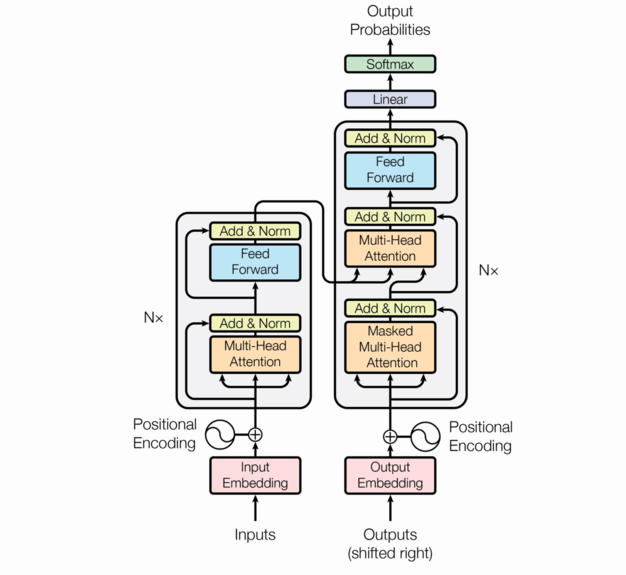

%%{init: {'theme': 'dark', 'themeVariables': {'fontSize': '30px'}}}%%
flowchart LR
D["Text data"] --> B["Batch"]
B --> F["Predict"]
F --> L["Loss"]
L --> G["Gradients"]
G --> U["Update"]
U --> F
MGMT 675: Generative AI for Finance
Every AI tool we’ve used this semester — Claude, ChatGPT, Gemini — is built on a large language model. (Modern versions also handle images and other inputs via similar mechanisms, but we’ll focus on text.)
An LLM is a neural network that:
That’s it. When Claude writes a paragraph, it is generating one token at a time, each time asking: “given everything so far, what should come next?” A temperature setting controls the randomness — low temperature picks near-certain tokens; high temperature allows more creative variation. This is why you get different responses to the same prompt.
This seems too simple to produce intelligent behavior. But when you train next-word prediction on trillions of words:
The training objective is simple. The capabilities that emerge at scale are not. Whether this constitutes “understanding” is debated — but the capabilities are real and useful, which is what matters for practitioners.
LLMs don’t process letters or words — they process tokens, which are common sub-word chunks.
Example
“Embedding” → [“Em”, “bed”, “ding”]
“unhelpful” → [“un”, “help”, “ful”]
“chatbot” → [“chat”, “bot”]
Tokenization is a practical compromise: character-level would be too slow; word-level can’t handle new words. Sub-word tokens balance vocabulary size with flexibility.
Each token is represented as a vector — a list of thousands of numbers.
\[\text{"revenue"} \rightarrow [0.12,\; -0.83,\; 0.45,\; \ldots,\; 0.07]\]
These vectors are learned during training — the model discovers that:
Embeddings convert discrete tokens into a continuous space where meaning is encoded as geometry. Nearby vectors = similar meanings. The embedding vectors are not hand-coded — they are learned parameters, trained jointly with the rest of the model.
The core innovation behind modern LLMs. Given a sequence of tokens, attention lets each token look at every other token and decide what’s relevant.
Example
“The company reported strong revenue but warned about supply chain disruptions”
The weights are determined by content, not position — so the model can relate words that are far apart. The next slide explains how.
For each token, the model computes three vectors:
Each Query is compared to every Key (via a similarity score). High-similarity pairs get more weight. The output for each token is a weighted blend of all the Values.
The Q, K, V matrices are learned parameters — the model discovers what to attend to during training. In practice, the model runs several attention processes in parallel (multi-head attention), each learning different types of relationships — one head for syntax, another for semantics, another for long-range dependencies.
The transformer stacks attention layers into a deep network. Each layer does two things:

Frontier models stack dozens to over a hundred of these layers.
Earlier layers capture syntax; deeper layers capture reasoning. By stacking, the same token gets different representations in different contexts — “bank” in finance vs. “bank” of a river.
| Model | Parameters | Training Data | Training Cost |
|---|---|---|---|
| GPT-2 (2019) | 1.5 billion | 40 GB text | ~$50K |
| GPT-3 (2020) | 175 billion | 570 GB text | ~$5M |
| GPT-4 (2023) | undisclosed (rumored >1T) | ~13 trillion tokens | ~$100M |
| Claude (2024–25) | undisclosed | undisclosed | undisclosed |
The trend: 100x more parameters and 100x more data every few years. Training a frontier model requires thousands of GPUs running for months. Companies no longer disclose parameter counts, but you access the result for a few dollars per million tokens.
An LLM has two types of learnable parameters, trained jointly on one objective — predict the next token:
Embedding Parameters
Transformer Parameters
At each position, the model guesses the next token; the loss penalizes wrong guesses. Both parameter types evolve together. A single document of 1,000 tokens provides 999 prediction tasks — multiply by trillions, and you see why the model learns so much.
%%{init: {'theme': 'dark', 'themeVariables': {'fontSize': '30px'}}}%%
flowchart LR
D["Text data"] --> B["Batch"]
B --> F["Predict"]
F --> L["Loss"]
L --> G["Gradients"]
G --> U["Update"]
U --> F
Each step adjusts billions of parameters simultaneously, making the model slightly better at predicting the next token across all the text it has seen.
Pre-Training
Fine-Tuning + RLHF
Pre-training gives the model knowledge. Fine-tuning gives it values and behavior. Without RLHF, a pre-trained model would happily generate harmful content or confidently state falsehoods.
Anthropic uses a variant called Constitutional AI where the model also critiques its own outputs against a set of principles, reducing the need for human raters.
This is why Claude refuses harmful requests, admits uncertainty, and follows instructions. The base model learned to mimic text; supervised fine-tuning and RLHF reshape its behavior toward helpfulness, honesty, and safety — qualities that were not the objective of pre-training.
Now you can see the mechanism behind everything we’ve done this semester:
| What you did | What’s happening under the hood |
|---|---|
| System prompts and skills (M5) | Shifts the token distribution toward your domain |
| Makers and checkers (M6) | Counteracts the plausible-but-wrong tendency |
| RAG pipeline (M12) | Injects documents into context for attention to connect |
| Sentiment analysis (M13) | Prompts the model to apply sentiment patterns learned during training |
| Agent with tools (M14) | Model trained to output tool-call tokens; runtime executes them |
| Different answers each time | Temperature-based sampling from the distribution |
The architecture explains why these techniques work — not just that they work.
The model samples the next token conditioned on your prompt. More specific context → narrower distribution → better output.
Example
Vague: “Tell me about Apple’s financials” → the model could continue with consumer advice, a Wikipedia summary, or equity analysis. The distribution spreads across all of these.
Specific: “As a sell-side equity analyst, write a one-paragraph summary of Apple’s Q1 2025 revenue drivers” → the distribution collapses to a narrow, useful range.
System prompts and few-shot examples shift the distribution toward the outputs you want. Temperature controls how sharply the model commits: at T=0 it always picks the top token (deterministic); at higher T it samples more broadly (creative but riskier). Both prompting and temperature follow directly from how the model generates text.
The attention mechanism is what gives LLMs their context window:
This is why RAG works: you inject relevant documents into the context window, and the attention mechanism connects your question to the answer in those documents — even if it’s buried on page 47.
The model is trained to predict plausible next tokens, not true ones.
This is a fundamental tendency of the architecture, not a simple bug. The model maximizes fluency, not truth. It can be mitigated — RAG grounds responses in documents, tool use lets the agent check facts, verification protocols catch errors — but likely not eliminated entirely. This is why the makers-and-checkers pattern matters.
Building Blocks
Training
Implications